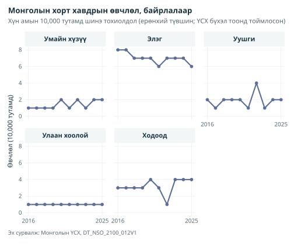
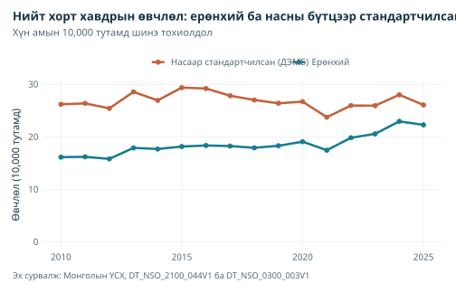
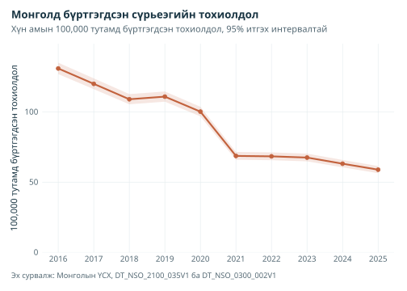

library(mongolstats)
library(dplyr)
library(ggplot2)
# Шалгасан сургалтын туслах функцүүд багцад дагалдах бөгөөд кодыг нь үзэж болно.
source(system.file("examples", "analysis-helpers.R", package = "mongolstats"), local = TRUE)
old_options <- nso_options(mongolstats.lang = "en")
# Текст тасрахгүй байхаар ерөнхий загварт зөв захын зай өгөх
old_theme <- theme_set(
theme_minimal(base_size = 11) +
theme(
plot.margin = margin(10, 10, 10, 10),
plot.title = element_text(size = 13, face = "bold"),
plot.subtitle = element_text(size = 10, color = "grey40"),
legend.text = element_text(size = 9),
legend.title = element_text(size = 10)
)
)Тойм
Монгол Улсын Үндэсний статистикийн хороо (ҮСХ) судалгаа, бодлогын шинжилгээнд хэрэгтэй хүн амын ердийн хөдөлгөөн, өвчний тандалтын өгөгдөл нийтэлдэг. Энэ заавар зөв хүснэгт олох, юу хэмжиж байгааг шалгах, тооноос түвшин тооцох аргыг харуулна.
Эрүүл мэндийн хүснэгт олох
Түлхүүр үгээр хайх
nso_search() нь ҮСХ-ны бүтэн каталогийн хүснэгтийн гарчгаас хайна. Зарим хүснэгт нэгээс олон хавтаст байдаг тул distinct() хүснэгт бүрийн нэг мөрийг үлдээнэ:
# Нас баралт
mortality <- nso_search("mortality")
mortality |>
distinct(tbl_id, tbl_eng_nm) |>
head(10)
#> # A tibble: 10 × 2
#> tbl_id tbl_eng_nm
#> <chr> <chr>
#> 1 DT_NSO_2100_014V1 NUMBER OF INFANT MORTALITY, aimags and the Capital and by …
#> 2 DT_NSO_2100_014V2 NUMBER OF INFANT MORTALITY, by soum and discrict, and by y…
#> 3 DT_NSO_2100_014V4 INFANT MORTALITY, by sex, by soum, and by year
#> 4 DT_NSO_2100_014V5 INFANT MORTALITY RATE, per 1000 live births, by sex, by so…
#> 5 DT_NSO_2100_015V1 INFANT MORTALITY RATE, per 1000 live births, aimags and th…
#> 6 DT_NSO_2100_015V2 INFANT MORTALITY, per 1000 live births, by soum, and by ye…
#> 7 DT_NSO_2100_023V1 MATERNAL MORTALITY RATIO, per 100000 live births, by soum,…
#> 8 DT_NSO_2100_030V2 UNDER-FIVE MORTALITY, per 1000 live births, aimags and the…
#> 9 DT_NSO_2100_040V1 NEONATAL MORTALITY, aimags and the Capital and by month
#> 10 DT_NSO_2100_040V2 NEONATAL MORTALITY RATE, per 1000 live births, aimags and …
# Хорт хавдар
cancer <- nso_search("cancer")
cancer |> distinct(tbl_id, tbl_eng_nm)
#> # A tibble: 5 × 2
#> tbl_id tbl_eng_nm
#> <chr> <chr>
#> 1 DT_NSO_2100_012V1 NEW CASES OF CANCER, per 10000 population, by type of cance…
#> 2 DT_NSO_2100_013V1 DEATHS OF CANCER, per 10000 population, by type of cancer, …
#> 3 DT_NSO_2100_044V1 NEW CASES OF CANCER, by age group, by year
#> 4 DT_NSO_2100_045V1 NEW CASES AND MORTALITY OF CANCER, per 10000 population, ai…
#> 5 DT_NSO_2100_045V1 NEW CASES AND MORTALITY OF CANCER, per 10000 population, ai…
# Халдварт өвчин
infectious <- nso_search("communicable")
infectious |> distinct(tbl_id, tbl_eng_nm)
#> # A tibble: 3 × 2
#> tbl_id tbl_eng_nm
#> <chr> <chr>
#> 1 DT_NSO_2100_020V2 INCIDENCE OF COMMUNICABLE DISEASES, by type of diseases, by…
#> 2 DT_NSO_2100_028V1 INCIDENCE OF COMMUNICABLE DISEASES, aimags and the Capital,…
#> 3 DT_NSO_2100_035V1 CASES OF COMMUNICABLE DISEASES, by type of selected disease…Татахаасаа өмнө гарчгийг уншина: хүснэгт тоо (“NUMBER OF …”, “CASES OF …”) эсвэл түвшин (“per 1000 live births”, “per 10000 population”) агуулж буйг, мөн газар нутгийн түвшнийг (“aimags and the Capital”, “by soum”) заана.
Салбараар үзэх
Эрүүл мэнд, боловсролын статистик нэг бүлэгт багтана:
# Бүх салбарыг харах
sectors <- nso_sectors()
sectors
#> # A tibble: 8 × 3
#> id type text
#> <chr> <chr> <chr>
#> 1 Economy, environment l Economy, environment
#> 2 Education, health l Education, health
#> 3 Historical data l Historical data
#> 4 Industry, service l Industry, service
#> 5 Labour, business l Labour, business
#> 6 Population, household l Population, household
#> 7 Regional development l Regional development
#> 8 Society, development l Society, development
# Эрүүл мэндтэй холбоотой дэд салбаруудыг олох
health_sector <- sectors |> filter(grepl("health", text, ignore.case = TRUE))
if (nrow(health_sector) > 0) {
subsectors <- nso_subsectors(health_sector$id[1])
subsectors |> head()
}
#> # A tibble: 6 × 3
#> id type text
#> <chr> <chr> <chr>
#> 1 Births, deaths l Births, deaths
#> 2 Disease l Disease
#> 3 General educational schools l General educational schools
#> 4 General indicators for Education l General indicators for Education
#> 5 Health insurance l Health insurance
#> 6 Main indicators for Health sector l Main indicators for Health sectorЖишээ судалгаа: хорт хавдрын өвчлөл
Хүснэгтийг судлах
cancer_tbl <- "DT_NSO_2100_012V1" # Хүн амын 10,000 тутамд хорт хавдрын шинэ тохиолдол
# Боломжтой хэмжээсүүдийг шалгах
meta <- nso_table_meta(cancer_tbl)
meta
#> # A tibble: 2 × 5
#> dim code is_time n_values codes
#> <chr> <chr> <lgl> <int> <list>
#> 1 Type malignant neoplasms Хорт хавдрын төрөл FALSE 7 <tibble [7 × 3]>
#> 2 Year Он TRUE 26 <tibble [26 × 3]>
# Хавдрын төрлийн код утгын дараалалгүй тул нэрийг нь уншина
cancer_types <- nso_dim_values(cancer_tbl, "Type malignant neoplasms", labels = "en")
cancer_types
#> # A tibble: 7 × 2
#> code label_en
#> <chr> <chr>
#> 1 0 "Total"
#> 2 1 " Liver"
#> 3 2 " Cervix uteri"
#> 4 3 " Stomach"
#> 5 4 " Lung"
#> 6 5 " Oesophagus"
#> 7 6 " Other"
# Оны код дотоод таних дугаар; нэр нь жинхэнэ оныг агуулна
annual_meta <- nso_dim_values(cancer_tbl, "Year", labels = "en")
range(annual_meta$label_en)
#> [1] "2000" "2025"Хавдрын өвчлөл, байрлалаар
# Хамгийн сүүлийн 10 жил
recent_years <- annual_meta |>
arrange(label_en) |>
tail(10) |>
pull(code)
# Зөвхөн тодорхой байрлалууд: «Нийт», «Бусад» ангиллыг хасна. ҮСХ-ны нэр
# эхний хоосон зай агуулж болох тул харьцуулахаас өмнө арилгана.
site_codes <- cancer_types |>
filter(!trimws(label_en) %in% c("Total", "Other")) |>
pull(code)
cancer_data <- nso_data(
tbl_id = cancer_tbl,
selections = list(
"Type malignant neoplasms" = site_codes,
"Year" = recent_years
),
labels = "en"
) |>
mutate(site = trimws(`Type malignant neoplasms_en`), year = as.integer(Year_en))
# Шугамууд давхцаж далдлахгүй байхаар байрлал тус бүрийг ижил хуваарьтай самбарт харуулна
cancer_data |>
ggplot(aes(x = year, y = value)) +
geom_line(color = "#8e44ad", linewidth = 1) +
geom_point(color = "#8e44ad", size = 2) +
facet_wrap(~site, nrow = 1) +
scale_x_continuous(breaks = function(x) range(round(x))) +
scale_y_continuous(limits = c(0, NA), breaks = scales::breaks_width(2)) +
labs(
title = "Cancer Incidence in Mongolia by Site",
subtitle = "New cases per 10,000 population (crude rate, rounded by NSO to whole numbers)",
x = NULL,
y = "Incidence (per 10,000)",
caption = "Source: NSO Mongolia, DT_NSO_2100_012V1"
) +
theme(panel.grid.minor = element_blank(), panel.spacing = unit(1, "lines"))
Эдгээр онд элэгний хавдрын нийтлэгдсэн жилийн түвшний дундаж хамгийн өндөр байна. Он бүрд ижил жин өгсөн энэ дундаж нь дүрслэх хураангуй болохоос нэгтгэсэн өвчлөлийн түвшин биш. Энэ хүснэгтэд хоёр зүйлийг анхаарна:
- Тоймлолт. ҮСХ эдгээр түвшнийг 10,000 тутмын бүхэл тоонд тоймлодог тул хоёр оны 1 өөрчлөлт дан тоймлолтоос үүсэж болно.
- Ганц оны огцом өсөлт. Тусгаарлагдсан өсөлт нь эх тодорхойлолт, бүртгэлийг шалгах үндэслэл юм. Энэ нь илрүүлэлт, эрт илрүүлэг, ангилал, өгөгдлийн алдаа эсвэл бодит хэлбэлзлээс үүсэж болно. Зөвхөн ер бусын харагдсанаар нь хасаж болохгүй.
Умайн хүзүүний хавдар зэрэг нэг хүйсэнд хамаарах хавдрын хуваарийг эх баримтжуулалтаас шалгах ёстой. Нийт хүн амд тооцсон түвшнийг эмэгтэйчүүдийн дундах түвшин гэж тайлбарлаж болохгүй. Тэр асуултад нийцтэй, хүйсээр ангилсан тоо болон хуваарь ашиглана.
Ерөнхий ба насны бүтцээр стандартчилсан өвчлөл
Дээрх түвшин ерөнхий: шинэ тохиолдлыг нийт хүн амд хуваасан. Нас ахихад хавдрын эрсдэл эрс нэмэгддэг тул нас бүрийн эрсдэл тогтвортой байсан ч хүн ам хөгшрөхөд ерөнхий түвшин өснө. Насны бүтцээр стандартчилах нь хэрэглэсэн бүлгүүдийн насны бүрэлдэхүүний ялгааны нөлөөг бууруулна. Жил бүрийн насны өвөрмөц түвшнийг нэг тогтмол стандарт хүн амд хэрэглэнэ. Энд ДЭМБ-ын дэлхийн стандарт хүн ам (2000–2025) ашиглав.
ҮСХ шаардлагатай хүртвэр, хуваарийг нийтэлдэг: насны бүлгээрх хорт хавдрын шинэ тохиолдол (DT_NSO_2100_044V1), насны бүлгээрх хүн ам (DT_NSO_0300_003V1).
# Хорт хавдрын шинэ тохиолдол, насны бүлэг ба оноор; тоо
case_years <- nso_dim_values("DT_NSO_2100_044V1", "Year", labels = "en")
case_ages <- nso_dim_values("DT_NSO_2100_044V1", "Age group", labels = "en")
indicator <- nso_dim_values("DT_NSO_2100_044V1", "Indicator", labels = "en")
cancer_case_source <- nso_data(
"DT_NSO_2100_044V1",
selections = list(
Indicator = indicator$code[trimws(indicator$label_en) == "New cases of cancer"],
"Age group" = case_ages$code,
Year = case_years$label_en
),
labels = "en"
)
cancer_case_status <- nso_value_status(cancer_case_source)
cancer_case_raw <- cancer_case_source |>
transmute(year = Year_en, age = trimws(`Age group_en`), cases = value)
cancer_cases <- filter(cancer_case_raw, age != "Total")
# Насны бүлгээрх хүн ам; ижил онууд, хоёр хүйс
pop_years <- nso_dim_values("DT_NSO_0300_003V1", "Year", labels = "en")
pop_ages <- nso_dim_values("DT_NSO_0300_003V1", "Age group", labels = "en")
pop_sex <- nso_dim_values("DT_NSO_0300_003V1", "Sex", labels = "en")
cancer_pop_source <- nso_data(
"DT_NSO_0300_003V1",
selections = list(
Sex = pop_sex$code[trimws(pop_sex$label_en) == "Total"],
"Age group" = pop_ages$code,
Year = pop_years$label_en[pop_years$label_en %in% case_years$label_en]
),
labels = "en"
)
cancer_pop_status <- nso_value_status(cancer_pop_source)
cancer_pop_raw <- cancer_pop_source |>
transmute(year = Year_en, age = trimws(`Age group_en`), population = value)
population <- filter(cancer_pop_raw, age != "Total")
# Хоёр хүснэгт өөр насны бүлэгтэй тул хоёуланг нь хавдрын хүснэгтийн
# хүснэгтийн бүлгүүд (0-4, 5-14, 15-19, ..., 60-64, 65+)
to_cancer_groups <- function(age) {
case_when(
age %in% c("5-9", "10-14") ~ "5-14",
age %in% c("65-69", "70-74", "75-79", "80-84", "85+", "70+") ~ "65+",
.default = age
)
}
# SEER-ийн хэрэглэдэг ДЭМБ-ын 2000-2025 оны стандарт сая хүн амын дүрслэл.
# https://seer.cancer.gov/stdpopulations/world.who.html
# Эдгээр жингийн нийлбэр бүлэглэхийн өмнө ч, дараа ч 1,000,000 байна.
who_standard <- tibble::tibble(
age = c(
"0-4", "5-9", "10-14", "15-19", "20-24", "25-29", "30-34", "35-39", "40-44",
"45-49", "50-54", "55-59", "60-64", "65-69", "70-74", "75-79", "80-84", "85+"
),
weight = c(
88569, 86870, 85970, 84670, 82171, 79272, 76073, 71475, 65877,
60379, 53681, 45484, 37187, 29590, 22092, 15195, 9097, 6348
)
) |>
mutate(age = to_cancer_groups(age)) |>
summarise(weight = sum(weight), .by = age)
# Хүн амын бүлгүүдийг нэгтгэхээс өмнө эх бүлгүүд давхардаагүйг шалгана.
stopifnot(!any(population$age == "70+") ||
!any(population$age %in% c("70-74", "75-79", "80-84", "85+")))
analysis_keys(cancer_cases, c("year", "age"))
analysis_keys(population, c("year", "age"))
population <- population |>
mutate(age = to_cancer_groups(age)) |>
summarise(population = analysis_sum(population), .by = c(year, age))
# Хоёр эх сурвалж ижил онууд, зорилтот насны бүх бүлгийг агуулсан байх ёстой.
# Дотоод холболт шинжлэх хүн амыг мэдэгдэлгүй сонгож болохгүй.
cancer_asr <- analysis_asr(cancer_cases, population, who_standard) |>
mutate(year = as.integer(year)) |>
arrange(year)
stopifnot(all(cancer_asr$standard_weight == 1e6))
# Боломжтой, харьцуулах нөхцөлтэй бүх насны нийт дүнтэй нийлбэрийг тулгана.
case_totals <- filter(cancer_case_raw, age == "Total") |> select(year, total = cases)
pop_totals <- filter(cancer_pop_raw, age == "Total") |> select(year, total = population)
if (nrow(case_totals)) {
check <- analysis_pair(summarise(cancer_cases, calculated = analysis_sum(cases), .by = year), case_totals, "year")
stopifnot(all(is.finite(check$total)), all(check$calculated == check$total))
}
if (nrow(pop_totals)) {
check <- analysis_pair(summarise(population, calculated = analysis_sum(population), .by = year), pop_totals, "year")
stopifnot(all(is.finite(check$total)), all(check$calculated == check$total))
}
cancer_asr
#> # A tibble: 16 × 4
#> year crude standardised standard_weight
#> <int> <dbl> <dbl> <dbl>
#> 1 2010 16.2 26.2 1000000
#> 2 2011 16.2 26.4 1000000
#> 3 2012 15.8 25.5 1000000
#> 4 2013 17.9 28.6 1000000
#> 5 2014 17.7 27.0 1000000
#> 6 2015 18.2 29.4 1000000
#> 7 2016 18.4 29.2 1000000
#> 8 2017 18.3 27.9 1000000
#> 9 2018 17.9 27.1 1000000
#> 10 2019 18.3 26.4 1000000
#> 11 2020 19.1 26.7 1000000
#> 12 2021 17.5 23.8 1000000
#> 13 2022 19.9 26.0 1000000
#> 14 2023 20.6 26.0 1000000
#> 15 2024 23.0 28.0 1000000
#> 16 2025 22.3 26.1 1000000
cancer_asr |>
tidyr::pivot_longer(c(crude, standardised), names_to = "measure", values_to = "rate") |>
mutate(measure = if_else(measure == "crude", "Crude", "Age-standardised (WHO World)")) |>
ggplot(aes(x = year, y = rate, color = measure)) +
geom_line(linewidth = 1.2) +
geom_point(size = 2) +
scale_color_manual(values = c("Crude" = "#2a78d6", "Age-standardised (WHO World)" = "#eb6834"), name = NULL) +
scale_y_continuous(limits = c(0, NA)) +
labs(
title = "All-Site Cancer Incidence: Crude and Age-Standardised",
subtitle = "New cases per 10,000 population",
x = NULL,
y = "Incidence (per 10,000)",
caption = "Source: NSO Mongolia, DT_NSO_2100_044V1 and DT_NSO_0300_003V1"
) +
theme(legend.position = "top", panel.grid.minor = element_blank())
2010–2025 онд ерөнхий түвшин +38.0%, стандартчилсан түвшин -0.5%-өөр өөрчлөгджээ. Стандартчилсны дараах өөрчлөлт бага байх нь ерөнхий өөрчлөлтөд хүн амын хөгшрөлт нөлөөлсөнтэй нийцнэ. Гэхдээ насны бүлэг бүрийн эрсдэл өөрчлөгдөөгүйг батлахгүй, өөрчлөлтийн хэдэн хувь хөгшрөлтөөс үүдсэнийг тогтоохгүй. Эдгээр нь дүрслэх үнэлгээ бөгөөд албан ёсны хандлагын тест биш. Өргөн бүлэгт, ялангуяа 65+ насанд насны бүрэлдэхүүний ялгаа үлдэнэ.
Биостатистикийн тайлбар: Насны бүтцээр стандартчилсан түвшин нь зөвхөн он, улс эсвэл насны өөр бүтэцтэй бүлгийг харьцуулахад зориулагдана. Үр дүн сонгосон стандарт хүн амаас хамаарна. Эрүүл мэндийн үйлчилгээнд учрах бодит ачааллыг судлахдаа ерөнхий түвшин эсвэл тохиолдлын тоог мэдээлнэ. 2021 оны бууралт цар тахалтай давхцах боловч эдгээр тоо өвчин үүсэх өөрчлөлтийг оношилгоо, бүртгэлийн өөрчлөлтөөс ялгахгүй. Нийтлэхээс өмнө хүн амын хүснэгтийн лавлах огноо, суурин эсвэл нийт хүн амын хамралтыг хавдрын эх сурвалжтай тулган баталгаажуулна.
Хүртвэр, хуваарийг олох
ҮСХ-ны түвшний олон хүснэгтэд харгалзах тооны хүснэгт байдаг. Тоо байвал онуудыг нэгтгэж, газар нутгийг нийлүүлж, итгэх интервал тооцож болно. Зөвхөн нийтэлсэн түвшнээр үүнийг хийх боломжгүй. Нялхсын эндэгдлийн хувьд:
-
DT_NSO_2100_014V1: нялхсын эндэгдэл (тоо), аймаг ба сараар -
DT_NSO_2100_018V5: амьд төрөлт (тоо), аймаг ба сараар -
DT_NSO_2100_015V2: нялхсын эндэгдлийн түвшин (амьд төрсөн 1,000 хүүхэд тутамд), сум ба оноор
Өөрөө тооцсон түвшинд найдахаасаа өмнө нийтлэгдсэн түвшнийг давтан гаргаж байгааг шалгана:
# Эх төлөвийг хадгалж, улсын бүрэн ажиглагдсан онуудыг шаардана.
national_deaths <- analysis_fetch_counts("DT_NSO_2100_014V1", "0")
national_births <- analysis_fetch_counts("DT_NSO_2100_018V5", "0")
valid_years <- analysis_common_years(national_deaths$annual, national_births$annual, require_values = TRUE)
stopifnot(length(valid_years) > 0)
infant_deaths <- filter(national_deaths$annual, year %in% valid_years)
live_births <- filter(national_births$annual, year %in% valid_years)
# Нийтлэгдсэн жилийн түвшин. Энэ код каталогийн хоёр хүснэгтийг заадаг тул
# mongolstats анхааруулж, эхний тохирол буюу «сумаар, жилээр» хүснэгтийг ашиглана.
# улсын нийт дүнг мөн агуулна.
imr_years <- nso_dim_values("DT_NSO_2100_015V2", "Year", labels = "en")
imr_published <- nso_data(
"DT_NSO_2100_015V2",
selections = list(Region = "0", Year = intersect(imr_years$label_en, valid_years)),
labels = "en"
) |>
select(year = Year_en, published = value)
published_years <- imr_published$year
imr_check <- analysis_pair(
select(filter(infant_deaths, year %in% published_years), year, deaths = count),
select(filter(live_births, year %in% published_years), year, births = count), "year"
) |>
analysis_pair(imr_published, by = "year") |>
mutate(
calculated = deaths / births * 1000,
difference = calculated - published,
# Нийтлэгдсэн бүхэл тооны тоймлолт хагас нэгж хүртэл зөрүүг зөвшөөрнө.
agrees_with_rounding = is.finite(difference) & abs(difference) <= 0.5 + 1e-8
) |>
arrange(year)
stopifnot(all(imr_check$births > 0))
imr_check
#> # A tibble: 10 × 7
#> year deaths births published calculated difference agrees_with_rounding
#> <chr> <dbl> <dbl> <dbl> <dbl> <dbl> <lgl>
#> 1 2016 1315 78194 17 16.8 -0.183 TRUE
#> 2 2017 1008 74328 14 13.6 -0.438 TRUE
#> 3 2018 1037 77528 13 13.4 0.376 TRUE
#> 4 2019 1041 78223 13 13.3 0.308 TRUE
#> 5 2020 878 76261 12 11.5 -0.487 TRUE
#> 6 2021 829 71659 12 11.6 -0.431 TRUE
#> 7 2022 814 65586 12 12.4 0.411 TRUE
#> 8 2023 793 64306 12 12.3 0.332 TRUE
#> 9 2024 702 57756 12 12.2 0.155 TRUE
#> 10 2025 738 54137 14 13.6 -0.368 TRUEХарьцуулах боломжтой он бүрийн зөрүү хагас нэгжийн дотор байгаа эсэхийг хүснэгт тодорхой харуулна. Энэ нь бүхэл тоонд тоймлосон түвшний зөвшөөрөх зөрүү юм. Энэ шалгалтаар 0 оныг хянах шаардлагатай. Босгоос их зөрүүг зөвхөн бүхэл тооны тоймлолтоор тайлбарлахгүй. Таарч байгаа нь тулгалтын шалгалт болохоос бүртгэл, хүн амын хамралт бүрэн болохыг батлахгүй. Эхлэх нь, зураглалын зааварт эдгээр хязгаарлалтыг мөн хадгална.
Жишээ судалгаа: бүртгэгдсэн сүрьеэгийн тохиолдол
Халдварт өвчний сарын хүснэгт мэдээлсэн буюу бүртгэгдсэн тохиолдлыг тоолдог. Жилийн нийлбэр тооцохдоо эдгээрийг оны эхнээс хуримтлагдсан дүн бус, сарын нэмэгдэл гэж үзнэ. Үнэлгээ ашиглахаасаа өмнө энэ бүртгэлийн дүрмийг эх сурвалжаар баталгаажуулна. Он хооронд харьцуулахад эрсдэлд өртөх хүн амд хуваана. Энд улсын жилийн дундах хүн амыг ашиглана.
tb_tbl <- "DT_NSO_2100_035V1" # Халдварт өвчний тохиолдол, төрөл ба сараар
# Сүрьеэгийн кодыг олох
indicators <- nso_dim_values(tb_tbl, "Indicators", labels = "en")
tb_code <- indicators |>
filter(trimws(label_en) == "Tuberculosis") |>
pull(code)
stopifnot(length(tb_code) == 1L)
tb_months <- nso_table_periods(tb_tbl)$label
tb_raw <- nso_data(tb_tbl, list(Indicators = tb_code, Month = tb_months), labels = "en")
tb_status <- nso_value_status(tb_raw)
tb_annual <- analysis_annual_counts(mutate(tb_raw, Region = "0"), "0") |>
filter(usable) |>
transmute(year, cases = count, n_months)
stopifnot(nrow(tb_annual) > 0L)
# Жилийн дундах хүн ам; хуваарь
population <- nso_data(
"DT_NSO_0300_002V1",
selections = list(Region = "0", Year = tb_annual$year),
labels = "en"
) |>
select(year = Year_en, population = value)
tb_rate <- analysis_pair(tb_annual, population, "year")
stopifnot(all(is.finite(tb_rate$population)), all(tb_rate$population > 0))
tb_rate <- tb_rate |>
mutate(
year = as.integer(year),
rate = cases / population * 1e5,
# Пуассоны яг 95% итгэх интервал
lower = qchisq(0.025, 2 * cases) / 2 / population * 1e5,
upper = qchisq(0.975, 2 * (cases + 1)) / 2 / population * 1e5
) |>
arrange(year)
tb_rate
#> # A tibble: 10 × 7
#> year cases n_months population rate lower upper
#> <int> <dbl> <int> <dbl> <dbl> <dbl> <dbl>
#> 1 2016 4045 12 3088856 131. 127. 135.
#> 2 2017 3779 12 3148917 120. 116. 124.
#> 3 2018 3498 12 3208189 109. 105. 113.
#> 4 2019 3624 12 3267673 111. 107. 115.
#> 5 2020 3339 12 3332062 100. 96.8 104.
#> 6 2021 2331 12 3393455 68.7 65.9 71.5
#> 7 2022 2355 12 3443458 68.4 65.7 71.2
#> 8 2023 2357 12 3490859 67.5 64.8 70.3
#> 9 2024 2232 12 3534503 63.1 60.6 65.8
#> 10 2025 2104 12 3572835 58.9 56.4 61.5
tb_rate |>
ggplot(aes(x = year, y = rate)) +
geom_ribbon(aes(ymin = lower, ymax = upper), fill = "#e74c3c", alpha = 0.15) +
geom_line(color = "#e74c3c", linewidth = 1) +
geom_point(color = "#e74c3c", size = 2) +
scale_x_continuous(breaks = tb_rate$year) +
scale_y_continuous(limits = c(0, NA), expand = expansion(mult = c(0, 0.1))) + # эхлэх утга нь 0
labs(
title = "Tuberculosis Notifications in Mongolia",
subtitle = "Reported cases per 100,000 population, with 95% confidence intervals",
x = NULL,
y = "Notifications per 100,000",
caption = "Source: NSO Mongolia, DT_NSO_2100_035V1 and DT_NSO_0300_002V1"
) +
theme(panel.grid.minor = element_blank())
Бүртгэгдсэн тохиолдлын түвшин 2016 онд 100,000 тутамд 131 байснаас 2025 онд 59 болж буурчээ.
Биостатистикийн тайлбар: Бүртгэлийн түвшин нь бүх шинэ өвчлөлийг бус, оношилж мэдээлсэн тохиолдлыг тоолно. Халдвар дамжих нь буурахад ч, тохиолдол илрүүлэлт буурахад ч энэ түвшин буурдаг. Интервал нь бүртгэлийн явц, хүн амын хуваарийг тогтсон гэж үзсэн тооллогын хэлбэлзлийг дүрсэлнэ; оношлогдоогүй тохиолдол, мэдээллийн алдааг хамрахгүй. 2021 оны огцом бууралт олон улсад сүрьеэгийн тусламжийг доголдуулсан КОВИД-19-ийн цар тахалтай давхцана. Эдгээр өгөгдөл бодит бууралтыг онош дутсанаас ялгахгүй. Өвчлөлийг үнэлэхэд дутуу мэдээлэлд засвар хийдэг ДЭМБ-ын улсын тооцоог үзнэ үү.
Эпидемиологийн судалгаанд анхаарах зүйл
-
Хугацааны хамралтыг шалгах: хүснэгтийн хамрах үеийг
nso_table_periods()эсвэлnso_dim_values()-өөр үзнэ. Сарын хүснэгтэд одоогийн оны хэсэгчилсэн мэдээлэл ихэвчлэн багтдаг тул жилийн харьцуулалтад бүрэн оныг үлдээнэ. - Хүснэгт юу хэмжиж байгааг шалгах: гарчиг нь утга тоо юу, түвшин үү гэдгийг болон түвшний хуваарийг заана.
- Шинжилгээнд тоог давуу хэрэглэх: хүртвэр, хуваарийн тооноос түвшин тооцож, нийтлэгдсэн түвшинтэй тулган шалгана.
- Зөв хуваарь хэрэглэх: нялхсын болон эхийн эндэгдэлд амьд төрөлт, өвчлөл болон нас баралтын ерөнхий түвшинд жилийн дундах хүн ам ашиглана.
- Хоёрдмол кодыг анхаарах: зарим код нэгээс олон хүснэгт заадаг. mongolstats анхааруулж, алийг ашигласнаа мэдээлнэ.
-
Газар нутгийн нарийвчлал ялгаатай: олон эрүүл мэндийн хүснэгт аймгаар, зарим нь сумаар байдаг (гарчигт “by soum”).
nso_dim_values()-өөрRegionхэмжээсийг шалгана.
Дараагийн алхам
- Эрүүл мэндийн үр дүнг зураглах: орон зайн эпидемиологийн зураглалын зааврыг үзнэ үү
- Функцийн баримтжуулалт: боломжтой бүх функцийг лавлахаас судална